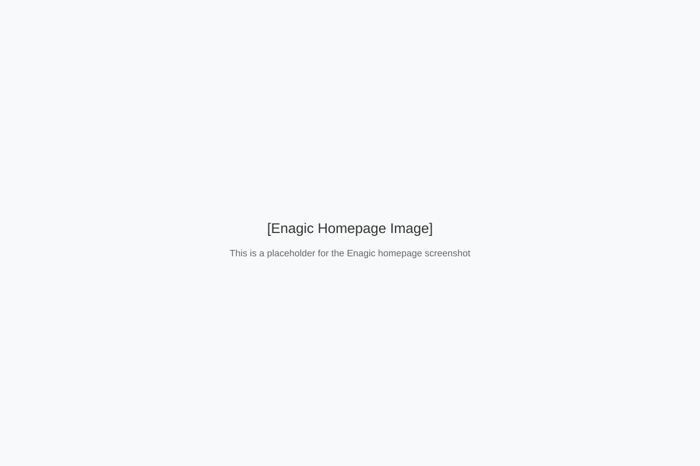

探索我们的历史、使命和价值观
Enagic是一家总部位于日本冲绳的全球性健康设备制造商，专注于生产高品质的电解水机。公司成立于1974年，拥有超过45年的历史，现已发展成为全球领先的还原水机制造商之一。
Enagic公司由大城博成先生于1974年在日本冲绳创立。最初，公司专注于为日本医院和诊所提供工业级水处理设备。
1988年，Enagic开始研发家用电解水机，旨在将医疗级水处理技术带入普通家庭。
2003年，Enagic开始国际扩张，首先进入北美市场，随后扩展到亚洲、欧洲和其他地区。如今，Enagic在全球拥有25个办事处，产品销往超过80个国家。
Enagic的使命是通过提供高品质的还原水技术，帮助人们实现更健康的生活方式。我们致力于：
我们坚持最高的制造标准，确保每台设备都经过严格的质量控制。
我们不断投资研发，改进技术，提供更高效、更先进的产品。
我们在所有业务关系中保持透明和诚实，建立长期信任。
"Kangan"一词源自日语，意为"回归原点"或"返璞归真"。Kangan Water（还原水）是指通过Enagic电解水机产生的碱性电解水，具有独特的物理和化学特性。
Enagic公司创始人大城博成先生在研究水质对健康影响时，受到日本长寿村饮用水特性的启发，开发了能够生产类似特性水的技术。
pH值在8.5-9.5之间，有助于平衡体内酸碱平衡。
具有负ORP值，表明其具有抗氧化特性。
水分子以较小的分子团形式存在，可能有助于更好的水合作用。

Kangan Water不仅仅是一种产品，更是一种生活理念，强调回归自然、平衡身体和环境友好。这一理念与日本传统的和谐与平衡哲学相呼应。
从日本冲绳的小型工厂发展至今，Enagic已成为一家全球性企业，在全球设有多个办事处和配送中心。
Enagic不仅关注业务增长，还积极参与社会责任项目，致力于改善全球水资源状况和促进健康教育。
支持全球清洁水资源项目，为缺水地区提供帮助。
采用环保制造工艺，减少碳足迹和资源消耗。
提供健康教育资源，提高公众对水质和健康关系的认识。
年历史
国家销售
全球用户
国际办事处
Enagic水机在日本获得医疗设备认证，符合严格的医疗标准。
Enagic的制造工艺符合国际质量管理标准。
Enagic的环境管理系统符合国际标准。
水质协会认证，确认产品符合严格的水质标准。
多次获得日本制造业优质产品奖项。
因在水处理技术领域的创新而获奖。
在多个国际健康产品展会上获奖。
因环保制造工艺而获得国际认可。
Enagic的每一台设备都经过严格的质量控制和测试，确保符合最高标准。我们对产品质量的承诺体现在全面的保修政策和全球服务网络中。
"质量不是偶然的，而是坚持不懈追求卓越的结果。" - Enagic创始人 大城博成